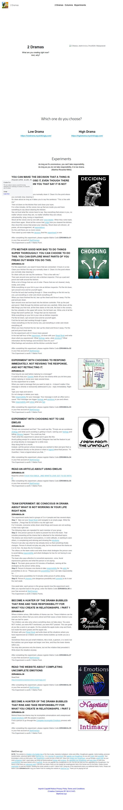

2 Dramas on Strikingly
This experiment works best in groups of 3 or 4 people and has several steps.
Step 1: Take out your Beep! Book and navigate to an empty page. Write the headline: „Things that do not work in my life right now“.
For 5 minutes, everyone writes down what things and issues are not working in their lives right now.
The following steps are repeated for each member of your group.
Step 2: One person (person A) starts to present his list to the team. That includes presenting all the drama that is attached to the individual topics.
The drama can show itself in accusations, in victim attitude, in wanting to save others, in complaining and whining and showing the emotions.
Person A can also say what he has already done so that something finally changes. Person A should not play any play, but he should show the drama as it is for him. He does this for 8 minutes.
The others on the team notice and write down what strategies the person uses to avoid taking responsibility and what strategies he has for not having to see the drama.
The team also pays attention to nonverbal expression, voice, facial expressions gestures and what the person is not saying.
Step 4: The team gives person A 8 minutes of feedback, naming all the strategies as the person writes along.
Step 5: Person A chooses one drama to take responsibility for. He asks for possibilities to do so: “Please give me possibilities how I can take responsibility for …“
The team gives possibilities for 6 minutes while person A writes along.
Step 6: Person A chooses one dangerous possibility and commits to do it over the next week.
One week later, each person in the group reports how the experiment went.
After you reported back to the group, enter the Matrix Code 2DRAMASx.06 in your free account at StartOverxyz.
This Experiment is worth 3 Matrix Points.